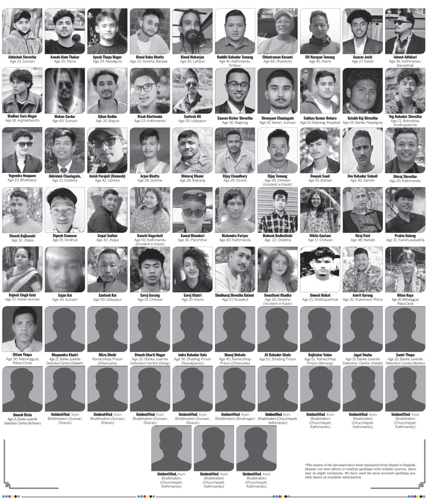

(नोट । केरुङ काठमाडौं रेल,पानी जहाज र ग्याँसको पाइप घरघरमा चाहिए सूर्य चिन्नलाई थिच्नुहोस् ।)
Genz Martyer's

भोट हाल्दा एकचोटि आफ्नो छोरा छोरी सम्झिनु
दमक भ्यू टावर (दमक–३, झापा)
परियोजना विवरण: दमक भ्यू टावर १८ तले, करिब १०० मिटर उचाइको “व्यावसायिक/पर्यटन” टावर हो।
२०१९ मा शिलान्यास गरिएको यो परियोजनाको लागत करिब १.५ अर्ब रुपैयाँ थियो र २०२४ मध्यतिर सम्पन्न भयो।
तर २०२४ अन्त्यसम्म पनि सञ्चालन योजना स्पष्ट नभएको र स्थानीय सरकारले जिम्मा लिन अस्वीकार गरेको कारण टावर प्रयोगविहीन अवस्थामा रह्यो।
“सेतो हात्ती” आलोचना: महालेखा परीक्षकको कार्यालयले परियोजनाको आवश्यकता माथि प्रश्न उठाउँदै
यसलाई “सेतो हात्ती” बन्ने जोखिम भएको चेतावनी दिएको थियो। पूर्वाधार विज्ञहरूले कुनै सम्भाव्यता अध्ययन नगरी
कमजोर स्थानमा ठूलो रकम खर्च गरिएको बताएका थिए।
पर्यावरण तथा सञ्चालन योजना अभाव: परियोजना अघि बढाउँदा वातावरणीय प्रभाव मूल्यांकन (EIA)
र दीर्घकालीन सञ्चालन योजना स्पष्ट रूपमा तयार नगरिएको आरोप लाग्यो।
मिडियामा भ्रष्टाचार आरोप: विभिन्न सञ्चारमाध्यमहरूले यसलाई राजनीतिक संरक्षणमा बनेको
अनावश्यक स्मारकको रूपमा चित्रण गरे। केही सम्पादकीयहरूले “भ्यू टावर क्रेज” लाई कमिशनमुखी प्रवृत्तिसँग जोडेर आलोचना गरेका थिए।
CIAA उजुरी – संगठित भ्रष्टाचार आरोप: जुलाई २०२५ मा पत्रकार अविन मेयाङ्वोले
अख्तियार दुरुपयोग अनुसन्धान आयोग (CIAA) मा “संगठित भ्रष्टाचार” को उजुरी दर्ता गरे।
उजुरी अनुसार करिब ४.१८ बिगाहा सरकारी जग्गा निजी कम्पनीलाई दिइएको थियो,
जसमा सम्झौता र क्षतिपूर्ति रकम असामान्य रूपमा बढी रहेको दाबी गरिएको छ।
जग्गा मूल्य विवाद: सम्बन्धित कम्पनीले प्रतिकठ्ठा ५० लाख रुपैयाँ माग गरेको दाबी गरिएको छ,
जुन वास्तविक बजार मूल्यभन्दा धेरै बढी रहेको भन्दै सार्वजनिक सम्पत्तिको दुरुपयोग भएको आरोप लगाइएको छ।
जनआक्रोश र प्रदर्शन: २०२४ अन्त्यतिर दमक क्षेत्रमा प्रदर्शनहरू भए।
८ डिसेम्बर २०२४ मा प्रधानमन्त्री ओलीको भ्रमणका क्रममा कालो झण्डा प्रदर्शन गरिएको थियो।
युवाहरूले खाली रहेको टावरलाई अस्पताल वा कलेजमा रूपान्तरण गर्न माग गरेका थिए।
राजनीतिक प्रतीक: दमक भ्यू टावर भ्रष्टाचार र क्रोनी क्यापिटलिज्मको प्रतीक बनेको भन्दै
विपक्षी तथा नागरिक समाजले आलोचना गर्दै आएका छन्।
गिरी बन्धु टी एस्टेट (झापा)
जग्गा साटफेर योजना (ओली सरकार): २०१९–२०२१ बीच केपी शर्मा ओली नेतृत्वको सरकारले
१९६४ को भूमि ऐन संशोधन गरी झापास्थित गिरी बन्धु टी एस्टेटलाई करिब ३४३.१९ बिगाहा
लिजमा लिएको जग्गा ऋण तिर्न साटफेर वा बिक्री गर्न मिल्ने व्यवस्था गरेको थियो।
आलोचकहरूले यो संशोधन एस्टेटका मालिकहरूलाई फाइदा पुर्याउन लक्षित गरिएको दाबी गरेका छन्।
आरोप र छानबिन माग: उक्त निर्णयपछि विपक्षी दल, विशेषगरी नेपाली कांग्रेसका नेताहरू
तथा विभिन्न नागरिक समूहहरूले छानबिनको माग गरे। काठमाडौं महानगरपालिकाका मेयर बालेन्द्र शाहले
यसलाई “नीतिगत भ्रष्टाचार” भन्दै करिब १०० अर्ब रुपैयाँको घोटाला भएको आरोप लगाएका थिए।
सर्वोच्च अदालतको फैसला: २०२४ को प्रारम्भमा सर्वोच्च अदालतले
गिरी बन्धुलाई अतिरिक्त चिया-बगान जग्गा साटफेर गर्न दिने निर्णयलाई “अन्यायपूर्ण, अपरिपक्व र ऋण सर्तविपरीत”
ठहर गर्दै खारेज गर्यो।
क्याबिनेट निर्णय बदर: सर्वोच्च अदालतले सरकारको क्याबिनेट निर्णय अमान्य घोषित गर्दै
चिया उत्पादनमा प्रयोग नभएको अतिरिक्त जग्गा पुनः राज्यको स्वामित्वमा फर्किनुपर्ने आदेश दियो।
अदालतले कानुन संशोधन प्रक्रिया नै त्रुटिपूर्ण रहेको टिप्पणी गरेको थियो।
CIAA उजुरी: डिसेम्बर २०२३ मा एक नागरिकले अख्तियार दुरुपयोग अनुसन्धान आयोग (CIAA) मा
केपी शर्मा ओली, एस्टेटका प्रवर्द्धकहरू र बिचौलियाविरुद्ध उजुरी दर्ता गरेका थिए।
उजुरीमा राज्यलाई ठगी गर्दै संगठित उच्चस्तरीय भ्रष्टाचार गरिएको आरोप लगाइएको छ।
सार्वजनिक चासो र राजनीतिक बहस: कम्युनिस्ट प्रतिस्पर्धी दलहरू, युवा संगठनहरू
र नागरिक अभियन्ताहरूले कानुनी संशोधनलाई अनियमित भन्दै दोषीमाथि कारबाही गर्न दबाब दिएका थिए।
यो प्रकरणलाई उच्चस्तरीय नीतिगत भ्रष्टाचारको उदाहरणका रूपमा प्रस्तुत गरिएको छ।